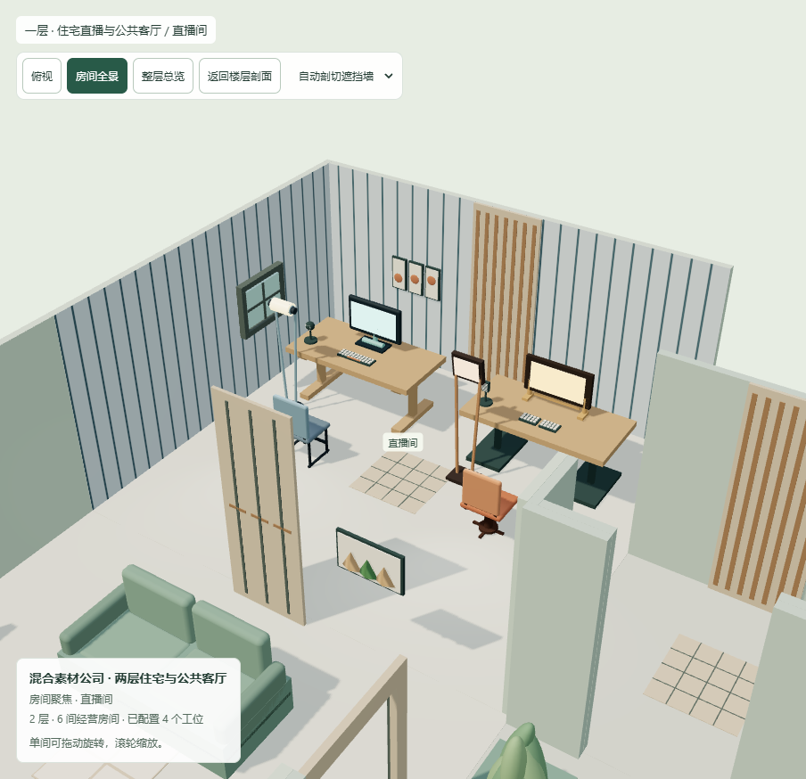
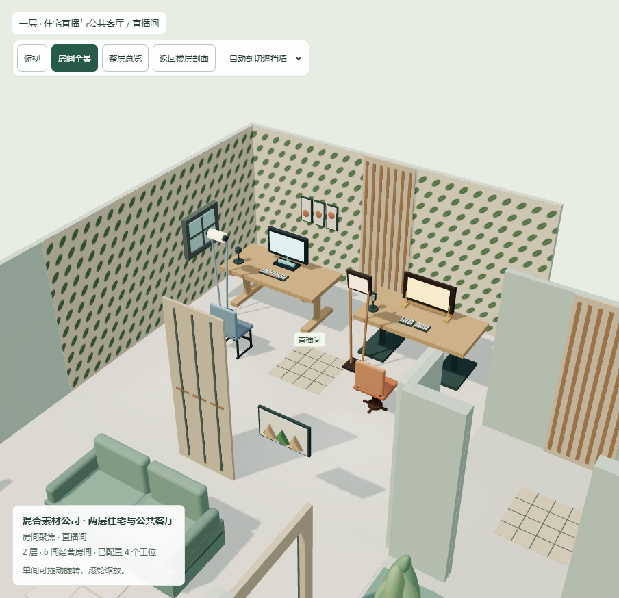
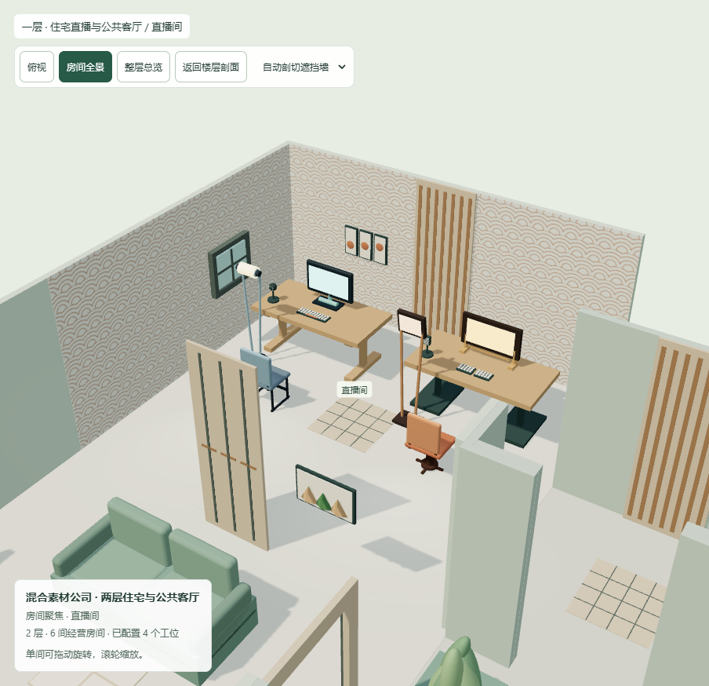
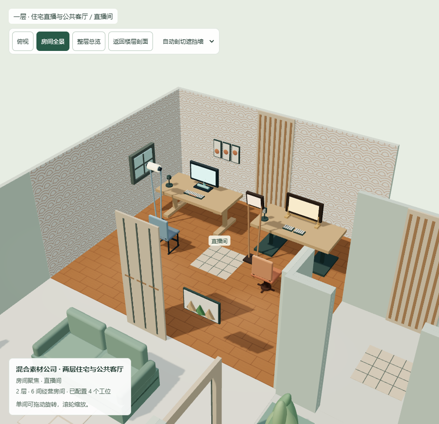
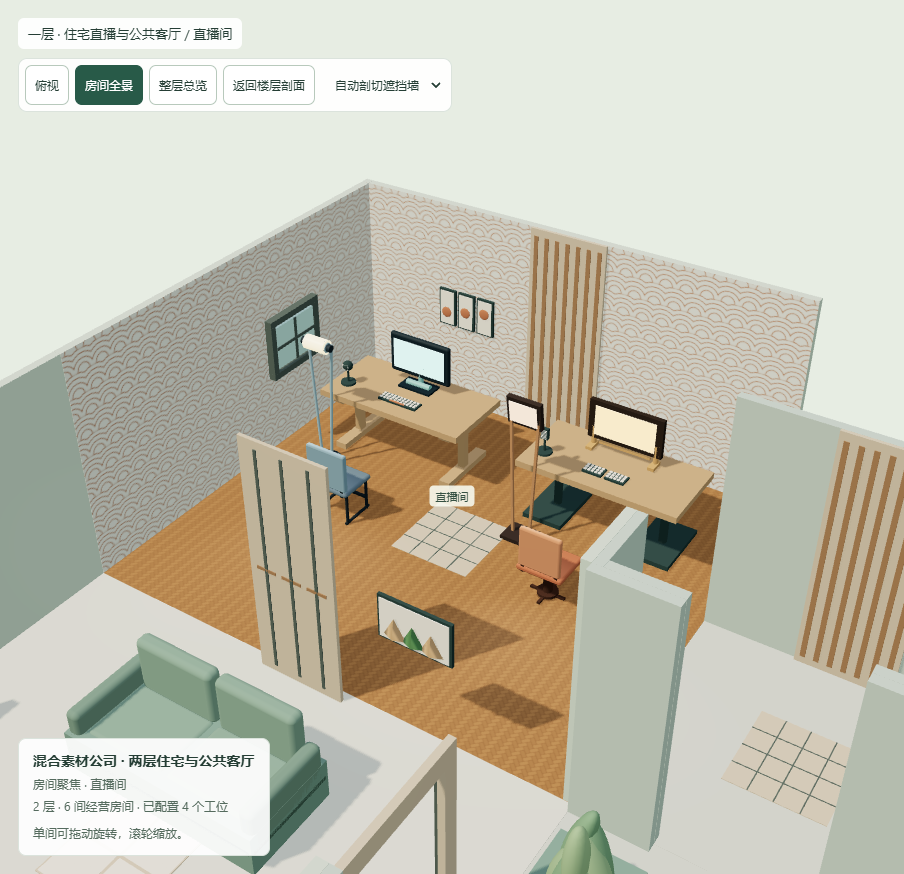
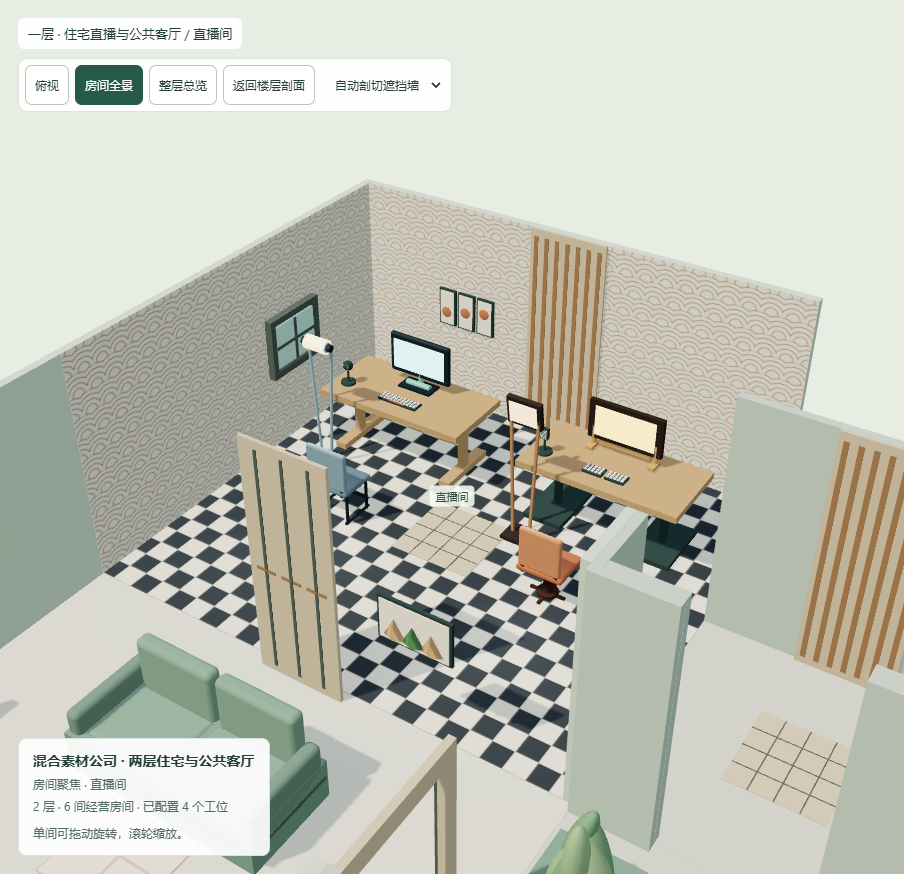
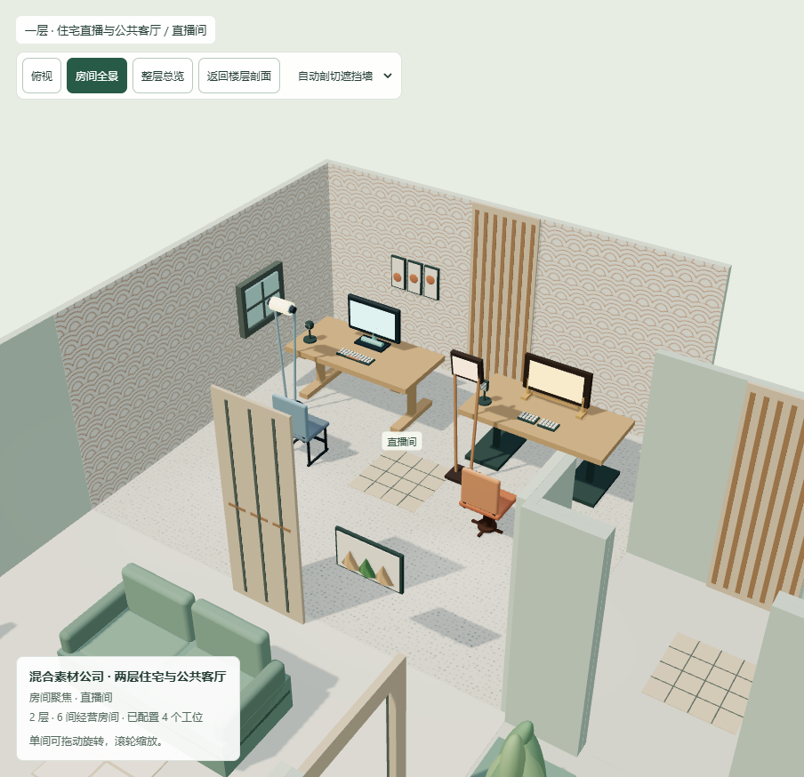
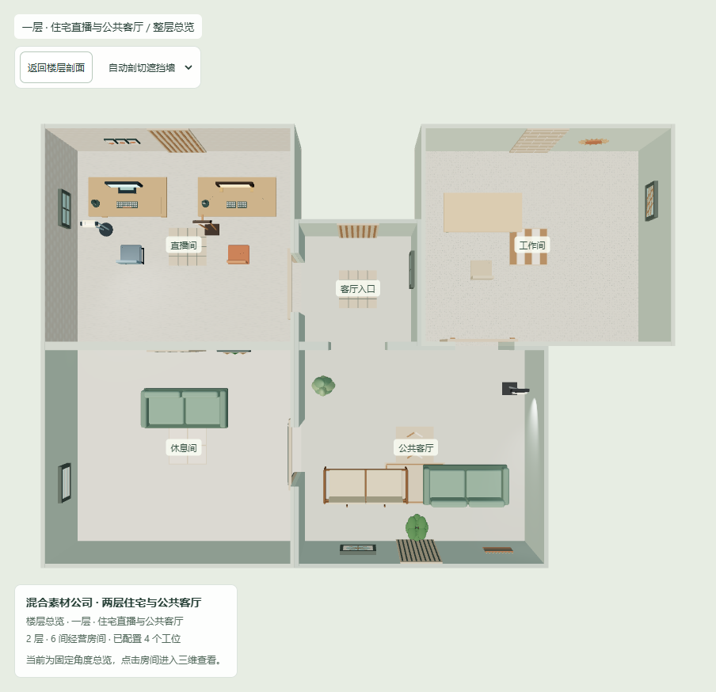
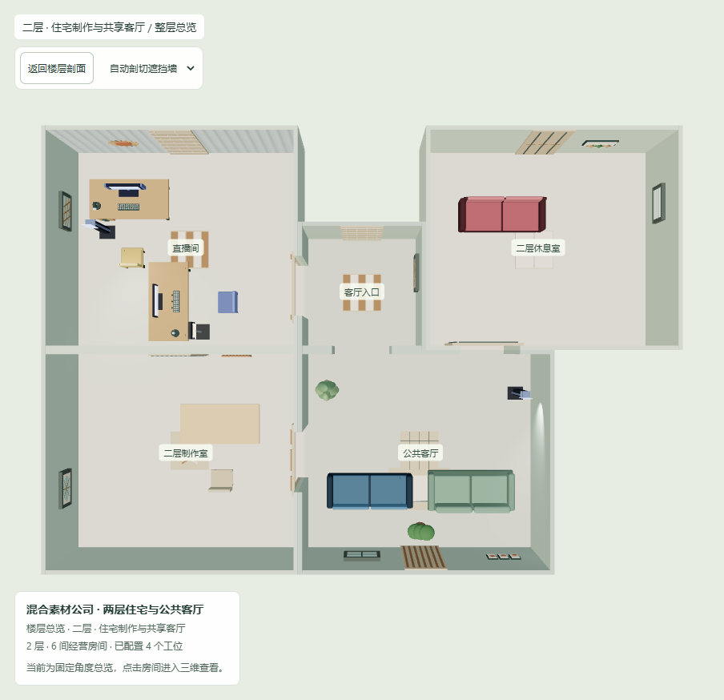
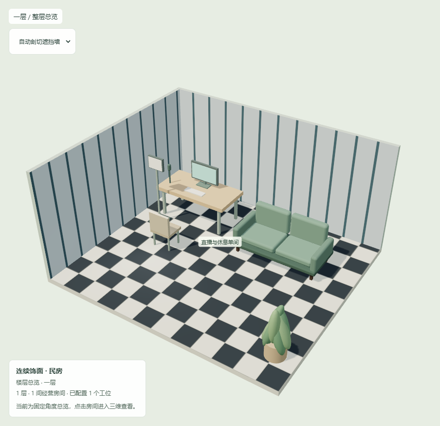

连续墙地饰材 a329692a0d6c
四墙面、四地面，真实整面应用及关闭恢复。无角色与普通机验收。

wall-wall-fine-stripes
wall-wall-leaf-damaskwall-wall-diamond-grid
wall-wall-arc-fan
floor-floor-offset-plank
floor-floor-herringbone
floor-floor-checker-tile
floor-floor-terrazzoscale-and-directionfinal-room
surfaces-1
surfaces-2
surfaceHome-1